Stepped Amphitheater
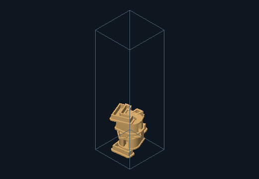
20 ft · iso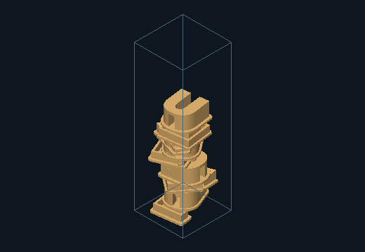
40 ft · iso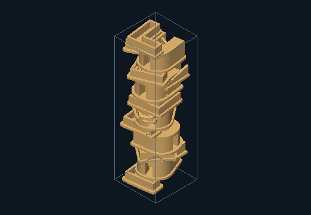
60 ft · iso20 × 20 × 20 ft · 7 letters
A · Original letters
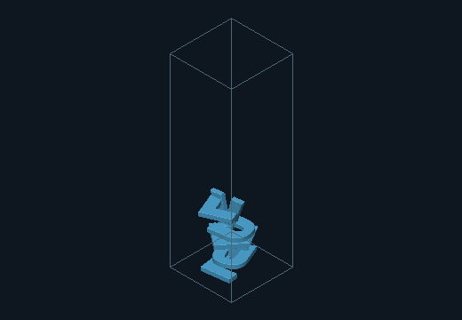
20 ft · iso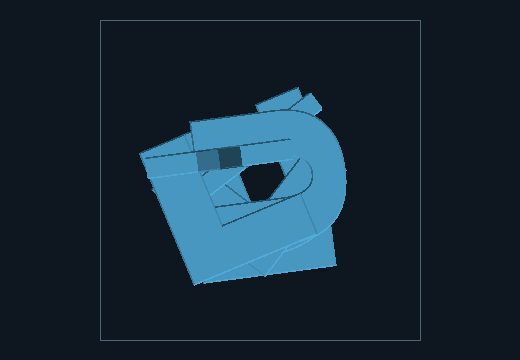
20 ft · plan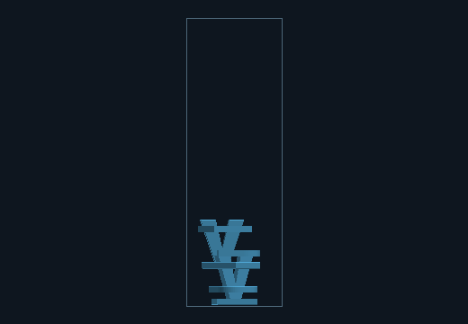
20 ft · elevation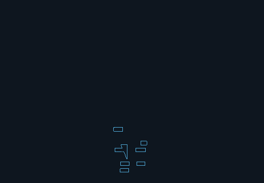
20 ft · sectionB · Letters and architecture
20 ft · iso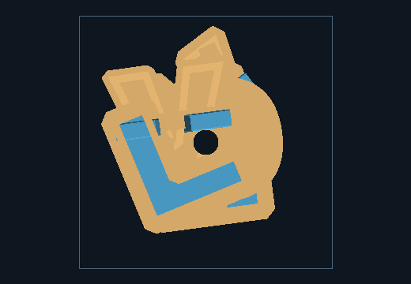
20 ft · plan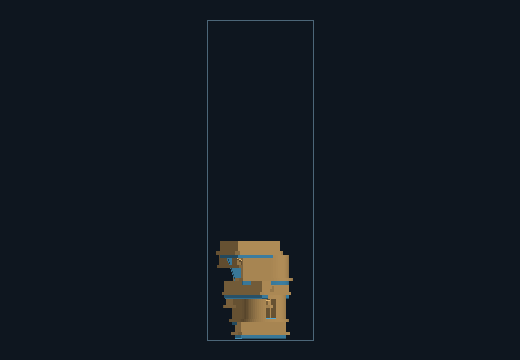
20 ft · elevation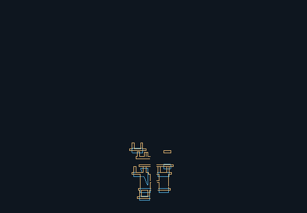
20 ft · sectionC · Architecture only
20 ft · iso20 ft · plan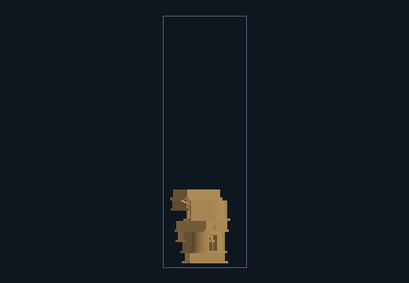
20 ft · elevation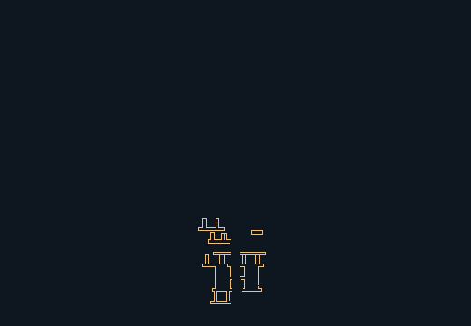
20 ft · section20 × 20 × 40 ft · 11 letters
A · Original letters
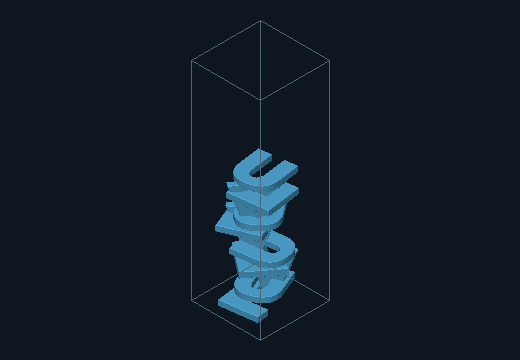
40 ft · iso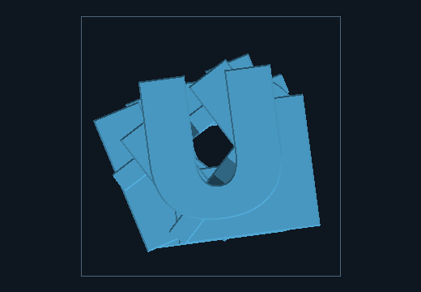
40 ft · plan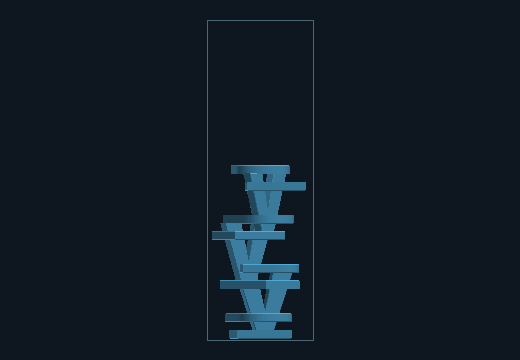
40 ft · elevation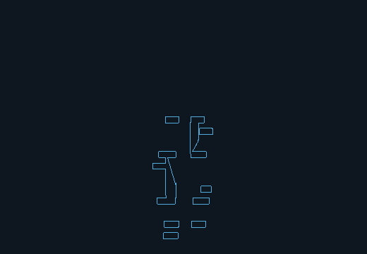
40 ft · sectionB · Letters and architecture
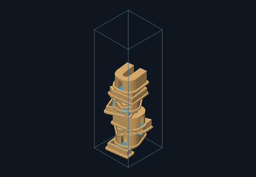
40 ft · iso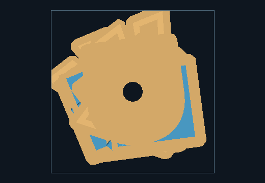
40 ft · plan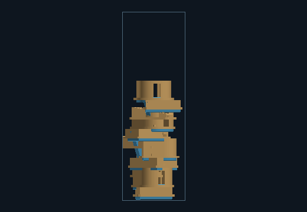
40 ft · elevation 40 ft · section
40 ft · sectionC · Architecture only
40 ft · iso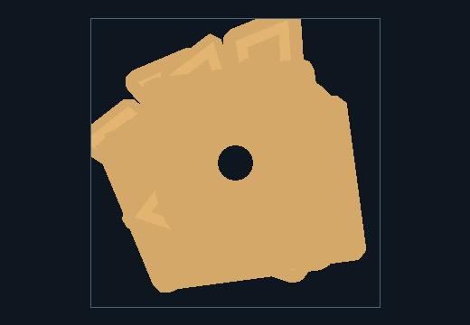
40 ft · plan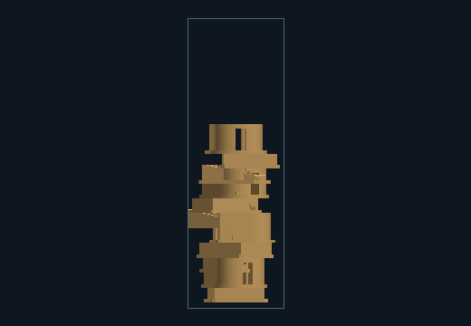
40 ft · elevation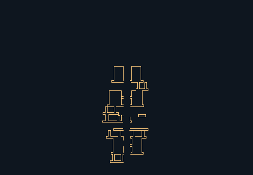
40 ft · section20 × 20 × 60 ft · 16 letters
A · Original letters
 60 ft · iso
60 ft · iso 60 ft · plan
60 ft · plan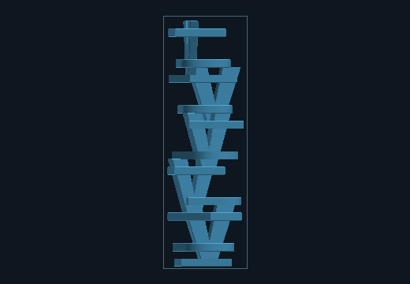
60 ft · elevation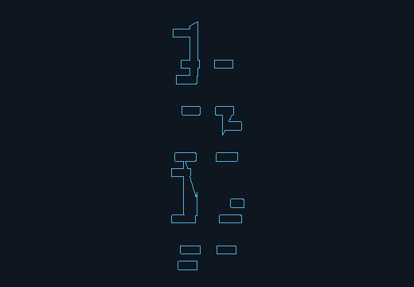
60 ft · sectionB · Letters and architecture
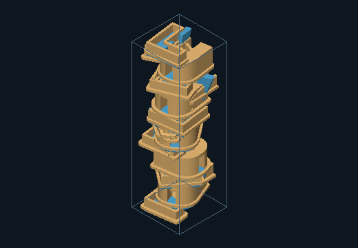
60 ft · iso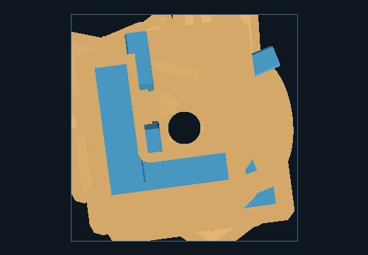
60 ft · plan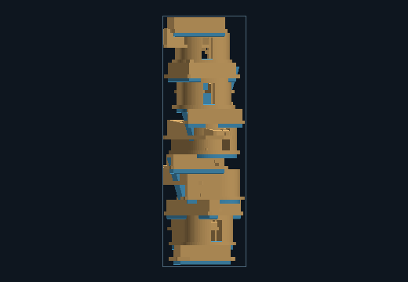
60 ft · elevation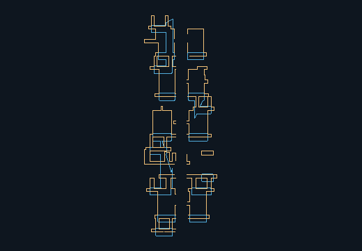
60 ft · sectionC · Architecture only
60 ft · iso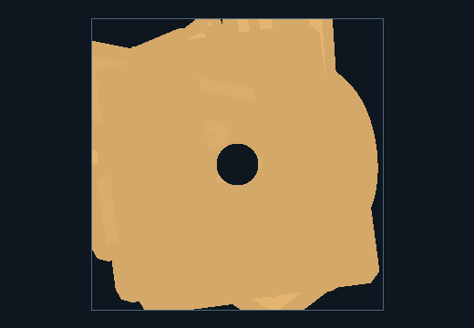
60 ft · plan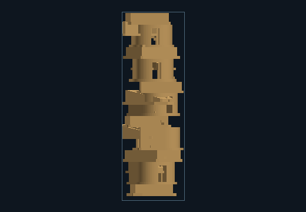
60 ft · elevation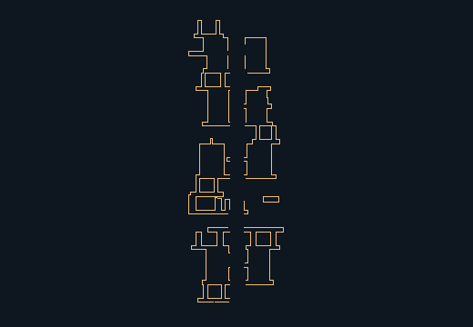
60 ft · section